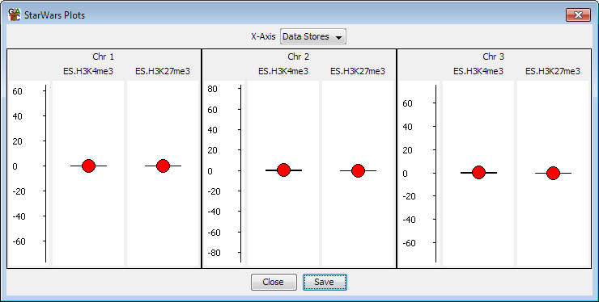

The Star Wars plot provides a very simple summary of a number of different data stores and probe sets. For each store it shows the mean quantitation represented by a filled circle and a confidence interval represented by whiskers.

To create a Star Wars plot select Plots > Star Wars Plot from the main menu. You can then choose whether you want the plot to show all visible data stores for the currently active probe list or whether you want to select a set of probe lists to plot for the currently active data store. The plot window will appear immediately and the individual plots will appear as they are calculated. This may take a few seconds for larger data sets.
Where multiple plots are drawn they will all be placed onto the same scale so you can quickly compare between them.
Within the Star Wars plot menu you can choose to plot either: